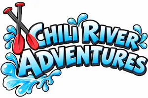
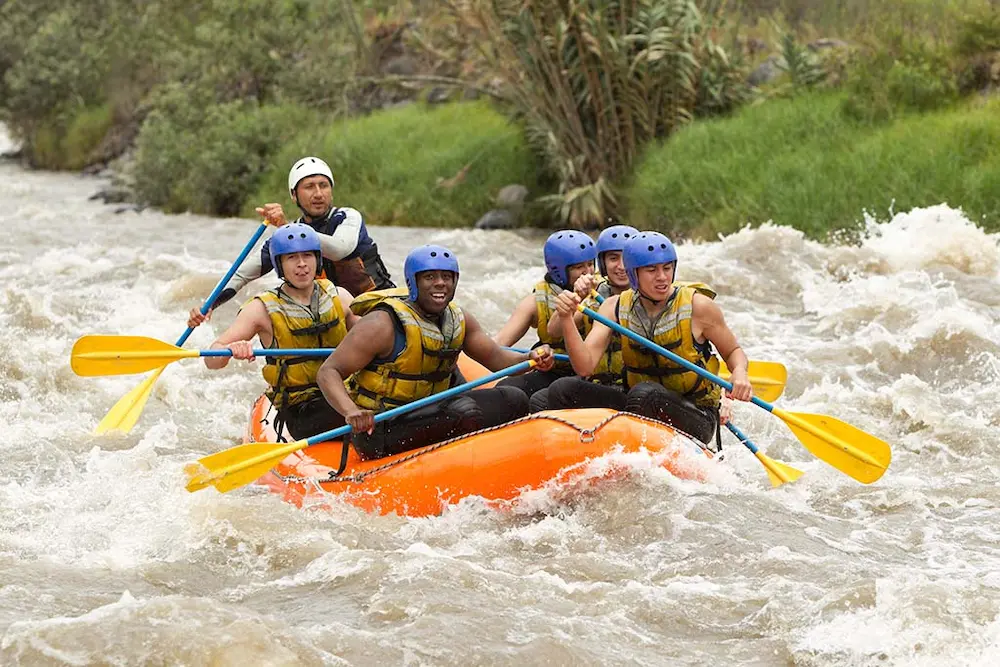

Our mission is to awaken the adventurous spirit of our visitors through thrilling descents along the Chili River, offering memorable journeys surrounded by the majesty of the volcanoes of Arequipa.


Our mission is to awaken the adventurous spirit of our visitors through thrilling descents along the Chili River, offering memorable journeys surrounded by the majesty of the volcanoes of Arequipa.
In 2018, our story began with a shared dream, a couple's vision fueled by a deep passion for adventure. In the early days, we didn't own any equipment; instead, we rented a boat to head out and navigate the currents of the Chili River. Through hard work and great enthusiasm, we took the big step of purchasing our first boat. We started by inviting family and friends to join us on our river runs, sharing with them the thrill of the water and the incredible views of the canyon. Gradually, through word-of-mouth recommendations from those who had experienced it firsthand, we began to grow organically. Today, Chili River Adventures has evolved from a family-style venture into an established agency in Arequipa. We still hold onto the same warm, personal spirit from our early days, offering safe and memorable excursions that make every traveler feel like part of our family on the river.